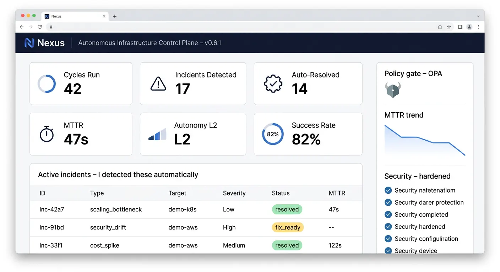

01 / Featured
Nexus
An autonomous infrastructure control plane that observes cloud-native signals, diagnoses incidents, generates IaC fixes, validates them in a shadow environment, applies them through GitOps, and verifies recovery.
control-plane / dashboard
